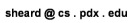

Spring 2007 - CS 322 Section 004 - Languages and Compiler Design
Instructor: Tim Sheard
Office: FAB 120-04
phone: 503-725-2410
email: 
course meeting time: Tuesday & Thursday 16:00-17:50 pm
Course meeting place: NEW LOCATION: FAB 150. This is the classroom near the Computer Science Dept. offices.
T.A. name: Juncao Li, office: FAB 115-07, email: juncao@cs.pdx.edu
Prerequisite.
This course is a continuation of CS321. Much of the material in this quarter
depends upon knowledge taught in that course. The notes from winter
2007 for CS321 can be found here..
Syllabus. A list of
coures goals, and topics covered in the course. Ignore the description of
the required textbook. instead see below.
Text book.
A listing of pertinent information about the required textbook.
Lecture Notes as presented in the spring of 2006.
The notes consist of Powerpoint slides (and associated code where appropriate).
Assignments. The homework assignments, and their
due dates, as assigned in the spring of 2006.
Project. A Description of the class project.
This course is about programming languages and compilers. We will
study programming languages, learn to propram in one new language (ML),
and write a compiler for a familiar language (Java subset).
- An important part of the course is a large programming project.
- There will be daily small (approximately 1 page) assignments given each
class, which are due the next time class meets, in addition to the project.
- There will be weekly 5 minute quizes to test the reading assigments.
We will write programs in ML. The recommended compiler is Standard ML of New Jersey.
You can download a version to install on your own machine
here.
- I will handout extensive notes on SML. Additional books
about ML are listed here.
- An excellent set of notes, by Riccardo Pucella, about programming in ML is here.
- Freely available tutorials about learning to program in ML
are listed here.
I recommend the one by Peter Lee as a good place to get started.
- If you use the Solaris (unix) machines at PSU, you can get SML by
typing: "addpkg sml", This installs the correct pathways and symbols.
Then just type "sml".
Below I will post announcements. I will post new announcements in front
of old ones, so the old ones will always still be there, only further down the page.